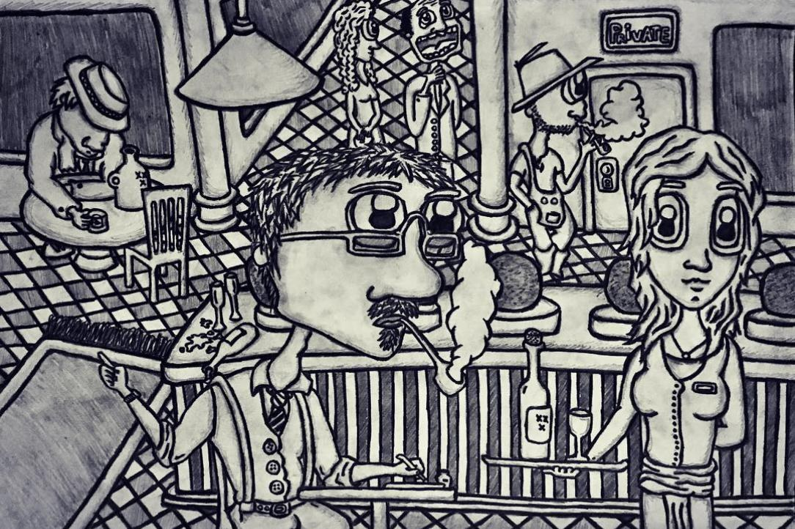

He was a child, and he played in the schoolyard.
He noticed something strange. Something out of place.
Someone shouting. A hard blow.
Power, for the first time, exercised.
He grew up, and the questions grew up alongside him.
What is power? Why does it exist? Who gets to exercise it? Who decides what it is for?
Power first appeared to Tomás as a word. Then the world acquired friction.
And it struck him: someone has to do something.
He went to university wondering what society was supposed to do with power. Design it? Organize it? Tame it, perhaps?
He believed it was possible to study society’s structures, understand how they worked, and coordinate the people who administered them. It had to be possible.
Then he started working in the judiciary.
He discovered that administration was complicated.
That beneath visible structures, other systems were operating. Rules that were rarely written down, yet determined how things actually worked. That every hierarchy was also a network, and that within those networks, some people were more present than others.
He began to notice something else.
Words are not neutral.
“Better.” “Worse.” “Legal.” “Illegal.” “Right.” “Wrong.”
They are categories we use to make the world operable. They allow us to coordinate. They allow thousands of people who have never met to act as if they inhabit the same reality.
But categories are also constraints.
And constraints are power.
Years later, Tomás found himself writing reports about modern slavery.
Scorecards. KPIs. Compliance frameworks. Risk assessments.
The whole orchestra, playing in unison.
There was a conversation.
“We cannot fully establish the connection between big tobacco producers and these supply-chain practices in southern Africa. That would be inappropriate.”
Of course it would.
The sentence we could not write had crossed a boundary.
Because before an institution can act on reality, it needs a language in which that reality can be recognized, classified and measured.
The meaning of things can be shared.
But shared meaning does not scale effortlessly.
A word passes from one mind to another, and something is lost. A distinction becomes a category. A category becomes a rule. A rule becomes an institution. An institution becomes a system.
And eventually, the system begins to operate on people who never agreed to its original meaning.
This is where the problem of power becomes interesting.
Power is not merely the ability to force someone to do something.
It is also the ability to establish the categories and rules within which things become possible.
And yet, without those constraints, very little becomes possible at all.
A game without rules does not give the player infinite freedom. It gives the player nothing meaningful to push against.
Freedom needs constraints.
Power creates constraints.
And therefore power can be both the condition that makes freedom possible and the mechanism through which it disappears.
The difficult question is not whether we need order.
We do.
We need to know the difference between a cat and a dog. Between peace and war. Between a promise and a threat. We need enough shared meaning to buy bread from the person next door without having to renegotiate the meaning of “bread” every morning.
The difficult question is where to draw the line.
How much uncertainty are we willing to tolerate to preserve freedom?
How much disorder are we willing to endure to keep the possibility of something new?
Who gets to decide?
And what happens when the people making the rules begin to believe that the rules are reality itself?
Tomás does not have the answer.
He has questions.
So he moved to Italy.
One day, he walked past an interactive museum. He got a job there as a salesperson and, later, as a designer of the experience itself.
A room.
A fresco.
A ball pit.
Something to say.
“The Roman baths were known for their magnificence,” delivered with a smile.
A tiny experience, carefully constrained: a few words, a path, a gesture, a reaction.
And the same realization returned.
The story was not separate from the system.
The system was part of the story.
Perhaps that is what design is: deciding which constraints will become possibilities.
Finding the exact combination of rules, language, information and incentives that allows an experience to emerge.
Maybe language is a kind of social alchemy: it never quite reaches the thing itself, only points toward it, and yet entire worlds can be built from what people agree that pointing means.
Tomás had always drawn.

He liked writing, too.
So eventually, he started building a world of his own.
It began with a conflict.
A political conflict. A personal one. Something that could become a civil war.
Then came the systems.
A card RPG combining roguelite progression with equipment-based deckbuilding.
Political archetypes that the world itself reads according to the position they occupy within it.
A reputation system from which the player’s knowledge of the world emerges.
Procedurally generated maps.
Biomes that shape the journey.
Hundreds of cards.
Missions, trade, encounters, consequences.
Rules that determine what the player can do.
Systems that determine what the player can know.
A world that responds to where the player stands within it.
And underneath all of it, the same question that had been there since the beginning:
What happens when people are placed inside a system, and the system starts responding to what they do?
The result is Kingdom of None.
A game about a political conflict, but also about a real one. A personal one.
A game that tries to ask questions without forcing the player to ask them.
Because perhaps that is where the line between systems and the assumptions that instruct those systems becomes visible — timidly, almost imperceptibly — to whoever is willing to look.
And that is where Tomás Becerra finds himself now: writing these words late into the evening, looking at the system, at the rules, at the categories.
Tomás does not know whether he understands power.
He knows that he has spent years trying to understand it.
He knows that he has studied it, worked inside it, measured its consequences, designed experiences around it, and eventually built systems of his own.
And he knows something else.
As he writes these words, he is designing a system too.
A sequence of words, arranged to produce a particular experience in another person’s mind.
A constraint.
A proposition.
An attempt to make something possible.
Because Tomás is following instructions too.